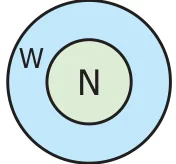

What is Mathematics about? It is about numbers, perhaps about shapes as well. It is true that people usually count 1,2,3... on various situations. This collection of counting numbers \(\{1, 2, 3, \ldots\}\) is called Natural numbers, denoted by N. If this collection includes 0 as well, then the collection \(\{0, 1, 2, 3, \ldots\}\) is called Whole numbers, denoted by W.

1.9.1 Recall the facts on Natural and Whole Numbers
- The smallest natural number is 1.
- The smallest whole number is 0.
- Every number has a successor. The number that comes just after the given number is its successor.
- Every number has a predecessor. The number 1 has a predecessor in W namely '0', but it has no predecessor in N. The number '0' has no predecessor in W.
- There is an order to numbers. By comparing the two given numbers the larger of the two can be identified.
- Numbers are endless. By adding 1 to any chosen large number, the next number can be found.
Logical and Mathematical operations of numbers are used in everyday arithmetic of numbers. These operations can be made easier using properties. Certain properties of numbers are already used without actually knowing them. For example, while adding \(8 + 2 + 7\), one way of adding is, 8 and 2 are added first to get 10 and then 7 is added to it. The other way of adding this is, 2 and 7 added first to get 9 and then 8 is added to 9 to get 17 which is same as in the first way.
Try These
- Find the value of \(6 + 3 + 8\) and \(3 + 6 + 8\)
- Are they same?
- Is there any other way of arranging these three numbers?
- Find the value of \(5 \times 2 \times 6\) and \(2 \times 5 \times 6\)
- Are they same?
- Is there any other way of arranging these three numbers?
- Is \(7 - 5\), the same as \(5 - 7\)? Why?
- What is the value of \((15 - 8) - 6\)? Is it the same as \(15 - (8 - 6)\)? Why?
- What is \(15 \div 5\)? Is it the same as \(5 \div 15\)? Why?
- What is the value of \((100 \div 10) \div 5\)? Is it the same as \(100 \div (10 \div 5)\)? Why?